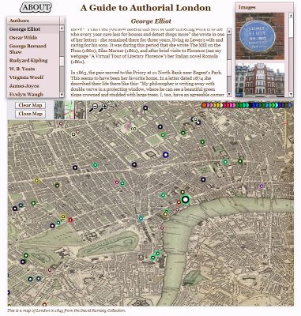

The historic map view from Authorial London
The Authorial London application was implemented as an update for Dr. Martin Evan’s original Authorial London, a Student’s Guide. The site is built with Flex and accesses narrative, image and geolocational data stored in a simple MySQL database. The purpose of the update was to give students the ability to see the spatial overlap of various authors who lived in and traveled through London over the last 600 years. Dr. Evans’ narratives were broken into paragraphs and associated with the particular author as well as with the original site and also with the various locations mentioned in the narrative. This way, when an icon on the map is clicked on, one not only sees any images associated with that location, but also part of any narrative associated with that location, with an indication as to which individual’s narrative that paragraph is drawn from. Related authors are also presented on the left, so that one could jump directly to that author. The locations associated with each author accumulate on the map, which can take the shape of either a street map of London, a satellite map of the city or a historic map from 1843, rectified and tiled to appear within the application.
If you have any questions or comments about the content of the site, please contact Dr. Martin Evans at evans@stanford.edu or, if your question pertains to the technology behind the site, please contact Elijah Meeks at emeeks@stanford.edu.
BIBLIOGRAPHY
Ackroyd, Peter, T.S.Eliot, A Life, 1984
Ackroyd, Peter, Blake, 1995
Ackerman, John, Dylan Thomas: His Life and Work, 1991
Bald, R.C., John Donne, A Life, 1970
Barber, Richard, Samuel Pepys Esquire, 1970
Berry, Reginald, A Pope Chronology, 1988
Bieri, James, Percy Bysshe Shelley: a biography, 2008
Bowker, Gordon, George Orwell, 2003
Campbell, Gordon, A Milton Chronology, 1997
Campbell, Ian, Thomas Carlyle, 1974
Carey, John, John Donne, life, mind, and art, 1990
Collis, John S., The Carlyles: A Biography of Thomas and Jane Carlyle, 1971
Coote, Stephen, Samuel Pepys: a life, 2000
Costello, Peter, James Joyce: The Years of Growth, 1992
Crick, Bernard, George Orwell, a life, 1980
Cross, J.W., George Eliot’s Life, as related in her letters and journals, 1970
Davis, Stan Gebler, James Joyce: a Portrait of the Artist, XXXX
Davison, Peter, George Orwell A Literary Life, 1996
De Maria, Robert, The Life of Samuel Johnson, 1993
Dupre, Catherine, John Galsworthy: a biography, 1976
Eisler, Benita, Byron: Child of Passion, Fool of Fame, 1999
Ferris, Paul, Dylan Thomas 1978
Freemantle, Anne, George Eliot, 1972
Garrett, Martin, George Gordon, Lord Byron, 2000
Garrett, Martin, Elizabeth Barrett Browning and Robert Browning, 2001
Garrett, Martin, Mary Shelley, 2002
Garrett, Martin, A Mary Shelley Chronology, 2002
Gibbs, A.M., Bernard Shaw: a life, 2005
Gibbs, A.M., A Bernard Shaw Chronology, 2001
Hastings, Selina, Evelyn Waugh: a biography, 1994
Henderson, Philip, Swinburne: Portrait of a Poet, 1974
Hobhouse, Janet, Everybody who was Anybody: A Biography of Gertrude Stein, 1975
Honan, Park, Matthew Arnold, A Life, 1981
Hone, Joseph, W.B.Yeats, 1965
Howard, Donald R., Chaucer, his life, his works, his world, 1987
Jacobs, Eric, Kingsley Amis: A Biography, 1995
James, Elizabeth, Charles Dickens, 2004
Kaplan, Fred, Thomas Carlyle, A Biography, 1983
Kaplan, Fred, The Singular Mark Twain: A Biography, 2005
Kaplan, Justin, Mark Twain and his World, 1974
Kelly, Linda, Richard Brinsley Sheridan: a life, 1997
Leader, Zachary, The Life of Kingsley Amis, 2006
Lewis, Jeremy, Tobias Smollett, 2003
Lodge, David, Author, Author, 2004
Mack, Maynard, Alexander Pope: a life, 1985
Mallett, Phillip, Rudyard Kipling: A Literary Life, 2003
Martin, Peter, Samuel Johnson: a biography, 2008
Moore, Harry T., The Priest of Love, A Life of D.H.Lawrence,1974
Murray, Nicholas, A Life of Matthew Arnold, 1996
Nicholls, Mark, The Importance of Being Oscar, 1980
Ollard, Richard, A Biography: Pepys, 1974
Orr, Alexandra, The Life and Letters of Robert Browning, 191
O’Toole, Fintan, A Traitor’s Kiss: The Life of Richard Brinsley Sheridan, 1997
Page, Norman, A.E.Housman, a critical biography, 1983
Page, Norman, An Evelyn Waugh Chronology, 1997
Parfill, George, John Donne: A Literary Life, 1989
Pecheux, Sister M. Christopher, Milton: A Topographical Guide, 1981
Preston, Peter, A D.H.Lawrence Chronology, 1994
Ricketts, Harry, The Unforgiving Minute: a life of Rudyard Kipling, 2003, 1974
Sheldon, Michael, Graham Greene, The Man Within, 1994
Sherry, Norman, The Life of Graham Greene, 1994
Spector, Robert D., Tobias George Smollett, 1989
Stevenson, Anne, Bitter Fame: a life of Sylvia Plath, 1989
Turnbull, Andrew, Thomas Wolfe, 1968
Toibin, Colm, The Master, 2004
Wain, John, Samuel Johnson, 1980
Webb, Ruth, Virginia Woolf, 2000
Williams, Norman Lloyd, Sir Walter Ralegh, 1962
Wu, Duncan, William Hazlitt: The First Modern Man,, 2008